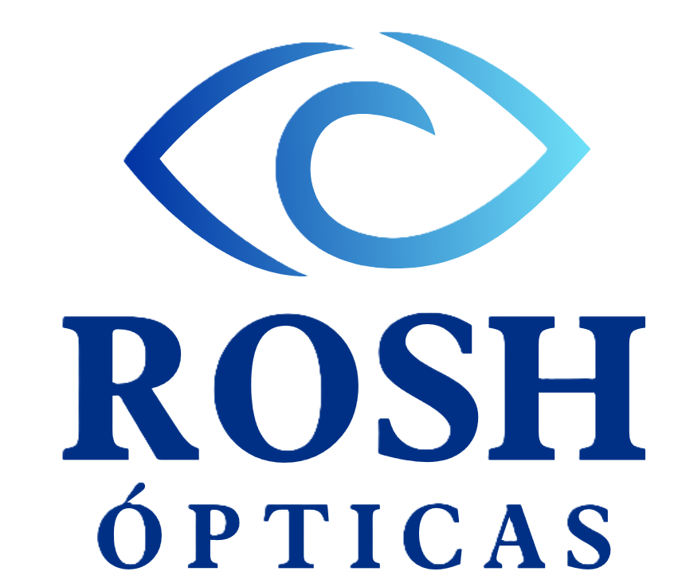

Lentes ópticos
Claridad visual con diseño elegante, monturas de alta calidad y graduación según tu receta.

Agendar citaCuida tu mirada con atención personalizada, tecnología óptica y monturas modernas para cada estilo.
Una opción práctica para renovar tus lentes con acompañamiento profesional. Incluye aros sujetos a disponibilidad y lentes monofocales graduados.

Desde diseños clásicos hasta tendencias contemporáneas, cada par se adapta a tu necesidad visual y a tu estilo.
Ver catálogo PDFClaridad visual con diseño elegante, monturas de alta calidad y graduación según tu receta.
Protección y estilo en cada mirada, con opciones modernas para diferentes rostros y ocasiones.
Comodidad, libertad visual y opciones para corrección o cambio de color de ojos.
Monturas cómodas y resistentes para acompañar la salud visual de los más pequeños.
En ROSH Ópticas transformamos la visión en confianza, estilo y bienestar. Somos un espacio dedicado a cuidar tu mirada con excelencia, calidez y atención personalizada.
Combinamos tecnología de vanguardia con recomendaciones pensadas para tu vida diaria, porque cada mirada tiene una historia única.

Agenda por WhatsApp y recibe orientación para escoger la mejor opción según tu receta, estilo y presupuesto.

Será un placer recibirte y que formes parte de nuestra familia visual, donde cada mirada cuenta y cada estilo se celebra.
Zona 9, local #57
Zona 18, local #53